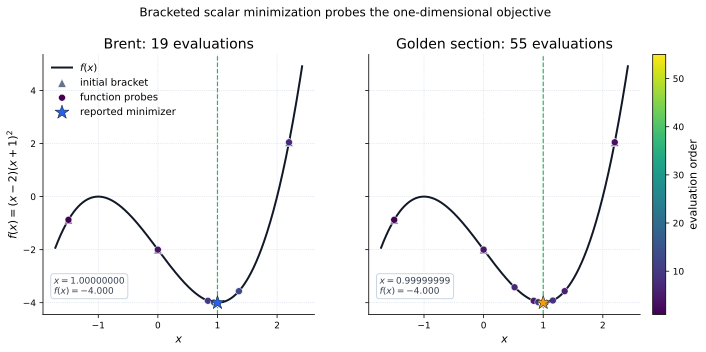
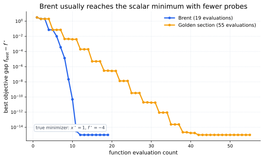
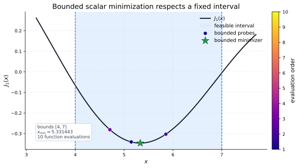

Core Idea
A univariate minimizer solves a scalar-input problem,
or, when the feasible interval is known in advance,
The SciPy tutorial exposes these solvers through
minimize_scalar. The unconstrained choices are
method="brent" and method="golden", while
method="bounded" keeps every candidate inside a fixed
interval.
Brackets and Brent Search
A good scalar bracket encloses a local minimum with a low middle point:
Brent's method mixes fast parabolic interpolation with more cautious golden-section steps. Golden-section search is useful for learning the interval-shrinking idea, but it is usually less efficient.

Evaluation Efficiency
In black-box scalar search, each function value can be expensive. A useful diagnostic is the best objective gap after each probe:

Bounded Scalar Search
The bounded method adds a simple interval constraint. SciPy's tutorial demonstrates it by minimizing the Bessel function \(J_1(x)\) over \([4,7]\):

Using SciPy
Pass a scalar function to minimize_scalar. Use a
bracket for unconstrained search when you can, and use
bounds for the bounded method.
from scipy.optimize import minimize_scalar
from scipy.special import j1
def f(x):
return (x - 2) * (x + 1)**2
brent = minimize_scalar(f, method="brent", bracket=(-1.5, 0, 2.2))
golden = minimize_scalar(f, method="golden", bracket=(-1.5, 0, 2.2))
bounded = minimize_scalar(j1, method="bounded", bounds=(4, 7))
print(brent.x, golden.x, bounded.x)When To Use It
| Method | Use when | Watch for |
|---|---|---|
brent |
You have a one-dimensional unconstrained objective and can provide a meaningful bracket. | A bracket encloses a local minimum, not necessarily the global minimum of a multimodal function. |
golden |
You want a simple educational baseline for bracket shrinking. | It usually needs more function evaluations than Brent. |
bounded |
The answer must lie inside a fixed interval \([a,b]\). | The method requires finite bounds and only searches inside them. |